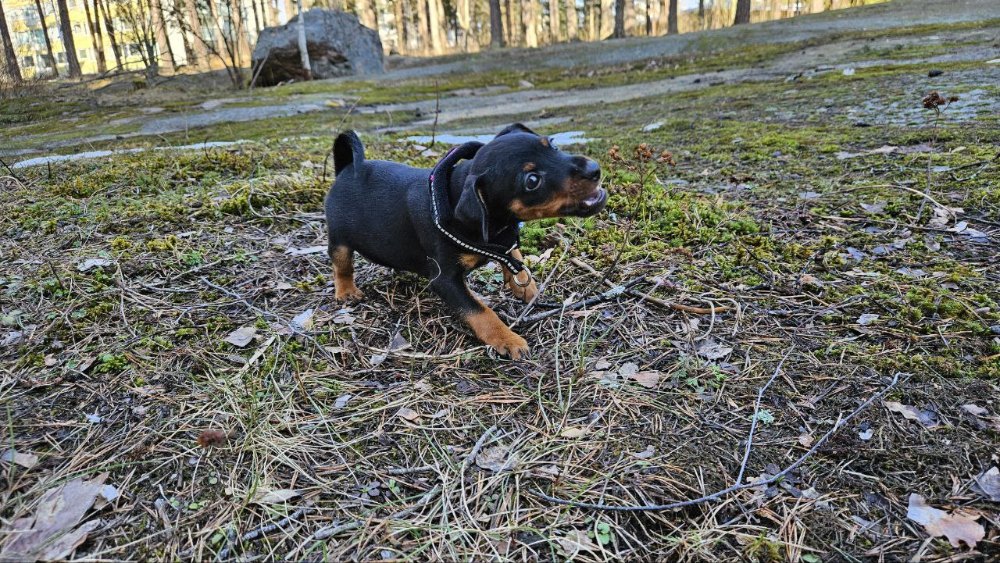
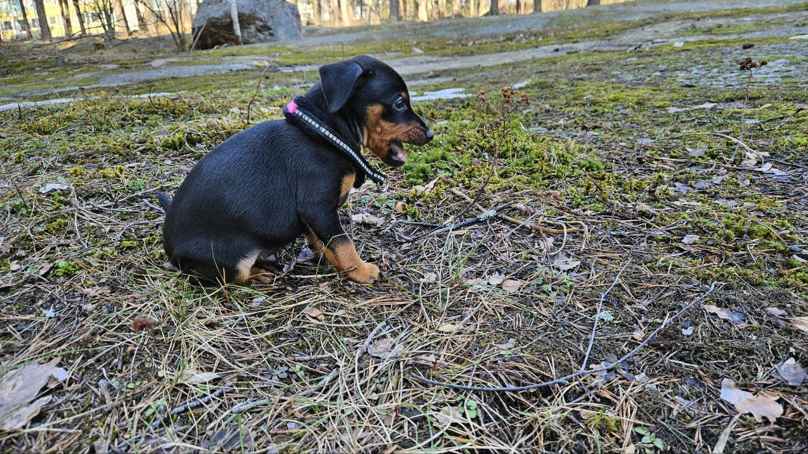
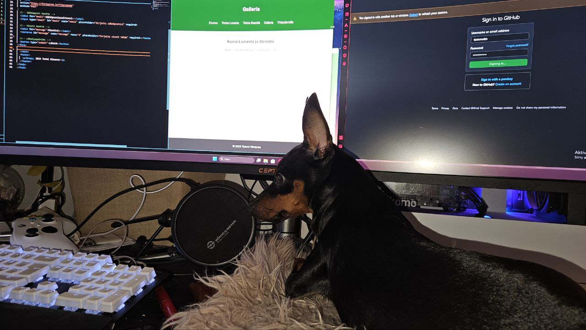
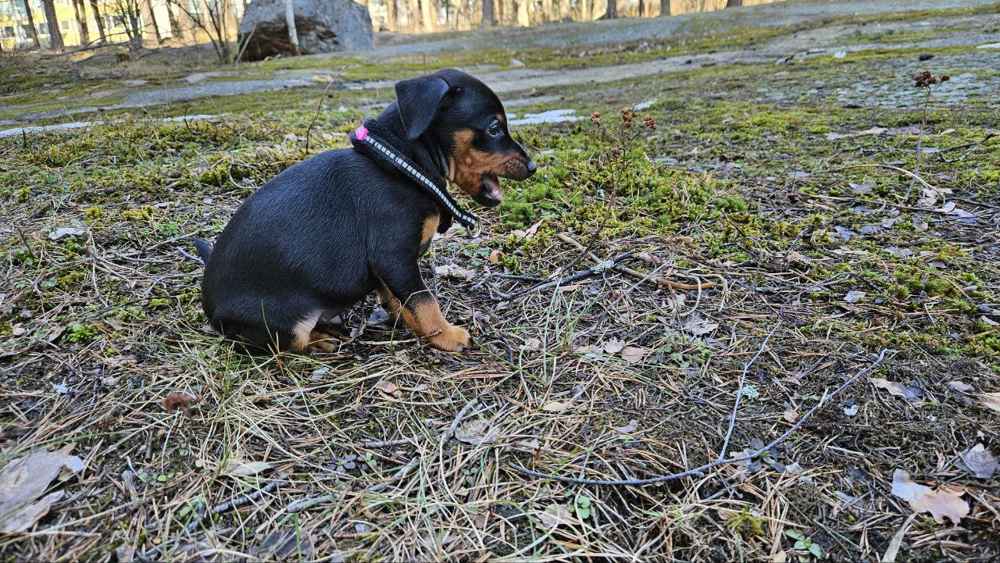
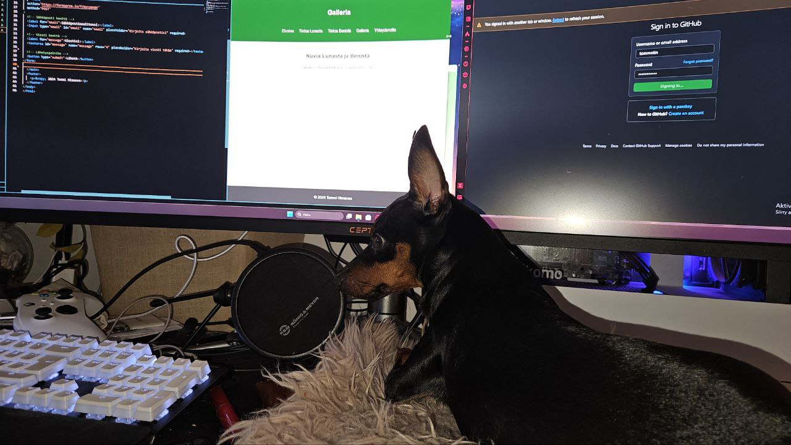

Ben
Ben on 9kk vanha kääpiöpinseri, joka on täynnä energiaa. Hän rakastaa juoksemista, pallojen jahtaamista ja uusien asioiden oppimista. Hän on Lunalle uskollinen ystävä. Ben on myös tunnettu sukkavaras lähipiirissänsä.



Benin ensimmäisiä ulkoiluja kotiuduttuaan meille.

Benillä meni roska suuhun

Ben tykkää viettää aikaa työpöydällä, kun opiskelen.